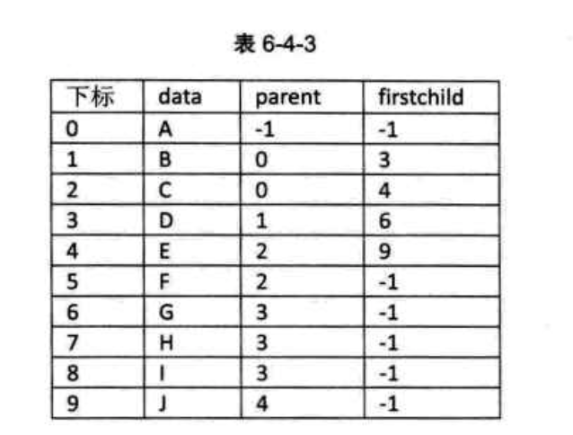

《大话数据结构》学习
《大话数据结构》学习之六：树
6. 树
6.1. 开场白
6.2. 树的定义
树（Tree）是 n（n≥0）个结点的有限集。n=0 时称为空树。在任意一棵非空树中：（1）有且仅有一个特定的称为根（Root）的结点；（2）当 n＞1 时，其余结点可分为 m（m＞0）个互不相交的有限集 ，其中每一个集合本身又是一棵树，并且称为根的子树（SubTree）。如下图所示：
子树 和子树 就是根结点 A 的子树。D、G、H、I 组成的树又是 B 为根结点的子树，E、J 组成的树是以 C 为根结点的子树。
树的定义还需要强调两点：
n>0时根结点是唯一的，不可能存在多个根结点。m>0时，子树的个数没有限制，但它们一定是互不相交的。下图中的两个结构就不符合树的定义，因为它们都有相交的子树。
6.2.1. 结点分类
树的结点包含一个数据元素及若干指向其子树的分支。结点拥有的子树数称为结点的度（Degree）。度为 0 的结点称为叶结点（Leaf）或终端结点；度不为 0 的结点称为非终端结点或分支结点。除根结点之外，分支结点也称为内部结点。树的度是树内各结点的度的最大值。 下图所示的这棵树的度为 3。
6.2.2. 结点间关系
结点的子树的根称为该结点的孩子（Child），相应地，该结点称为孩子的双亲（Parent）。 同一个双亲的孩子之间互称兄弟（Sibling）。结点的祖先是从根到该结点所经分支上的所有结点。以某结点为根的子树中的任一结点都称为该结点的子孙。如下图所示：
6.2.3. 树的其他相关概念
结点的层次（Level）从根开始定义起，根为第一层，根的孩子为第二层。若某结点在第 l 层，则其子树就在第 l+1 层。其双亲在同一层的结点互为堂兄弟。树中结点的最大层次称为树的深度（Depth）或高度。如下图所示：
如果将树中结点的各子树看成从左至右是有次序的，不能互换的，则称该树为有序树，否则称为无序树。
森林（Forest）是 m(m≥0) 棵互不相交的树的集合。对树中每个结点而言，其子树的集合即为森林。任何一棵树，删除了根结点就变成了森林。
线性表与树的结构的对比：

6.3. 树的抽象数据类型
相对于线性结构，树的操作及完全不同了。这里给出一些基本和常用的操作。
ADT 树 (tree) Data: 树是由一个根结点和若干棵子数构成.树中结点具有相同数据类型及层次关系 Operation: InitTree (*T):构成空树T DestroyTree(*T):销毁树T CreateTree(*T,definition):按definition中给出的树的定义来构造树 ClearTree(*T):若树T存在,则将树T请为空树 TreeEmpty(T):若T为空树,返回true,否则返回false TreeDepth(T):返回T的深度 Root(T):返回T的根结点 Value(T,cur_e):cur_e是树T中一个结点,返回此结点的值 Assign(T,cur_e,value):给树T的结点cur_e赋值为value Parent(T,cur_e):若cur_e是树T的非根结点,返回它的双亲,否则返回空 LeftChild(T,cur_e):若cur_e是树T的非叶节点,则返回它的最左孩子,否则返回空 RightSibling(T,cur_e):若cur_e有右兄弟,则返回他的右兄弟,否则返回空 InsertChild(*T,*p,i,c):其中p指向树T的某个结点,T为所指结点p的度加上1,非空树c与T 不相交,操作结果为插入c为树T中p所指结点的第i棵子树 DeleteChile(*T,*p,i):其中p指向树T的某个结点,i为所指结点p的度,操作结果为删除T中p所指结点的第i棵子树 endADT
6.4. 树的存储结构
树中某个结点的孩子可以有多个，这就意味着，无论按何种顺序将树中所有结点存储到数组中，结点的存储位置都无法直接反映逻辑关系。
不过充分利用顺序存储和链式存储结构的特点，完全可以实现对树的存储结构的表示。这里介绍三种不同的表示法：双亲表示法、孩子表示法、孩子兄弟表示法。
6.4.1. 双亲表示法
假设以一组连续空间存储树的结点，同时在每个结点中，附设一个指示器指示其双亲结点在数组中的位置。每个结点除了知道自己是谁以外，还知道它的双亲在哪里。
其中，data 是数据域，存储结点的数据信息；而 parent 是指针域，存储该结点的双亲在数组中的下标。
以下是双亲表示法的结点结构定义代码：
//树的双亲表示法结点结构定义 #define MAX_TREE_SIZE 100 typedef int TElemType; //树结点的数据类型,目前暂定义为整型 typedef struct PTNode //结点结构 { TElemType data; //结点数据 int parent; //双亲位置 }PTNode; typedef struct //树结构 { PTNode nodes[MAX_TREE_SIZE]; //结点数组 int r,n; //根的位置和结点数 }PTree;
由于根结点是没有双亲的,约定根结点的位置域设置为-1,这就意味着所有的结点都存在他的双亲结点。下图是树结构和该树的双亲表示：
这样的存储结构，我们可以根据结点的 parent 指针很容易找到它的双亲结点，所用时间复杂度为 ，知道 parent 为 -1，表示找到了树结点的根。如果要知道结点的孩子是什么,就必须遍历整个结构才行。
这个有点麻烦，接下来进行下改进：
增加一个结点最左边孩子的域，叫长子域，如果没有孩子的结点，这个长子域就设置为 -1。如下图：

如果我们关注各兄弟之间的关系，则可：每一个结点如果它存在右兄弟，则记录下右兄弟的下标，如果右兄弟不存在,则赋值为 -1。如下图所示：
存储结构的设计是一个非常灵活的过程。一个存储结构设计的是否合理，取决于基于该存储结构的运算是否适合、是否方便，时间复杂度好不好等。注意也不是越多越好，有需要时再设计相应的结构。
6.4.2. 孩子表示法
由于树中每个结点可能有多棵子树，可以考虑多重链表，即每个结点有多个指针域，其中每个指针指向一棵子树的根结点，我们把这种方法叫做多重链表表示法。不过，树的每个结点的度，也就是它的孩子个数是不同的。所以可以设计两种方案来解决。
方案一：
指针域的个数等于树的度（树的度是各个结点度的最大值）。其结构如下图所示：
其中 data 是数据域，child1 到 childd 是指针域，用来指向该结点的孩子结点。
对于下图中的树来说，树的度是 3，所以指针域的个数是 3，这种实现方法如下下图所示：
这种方法对于树中各结点的度相差很大时,显然很浪费空间,因为有很多的结点指针域都是空的.如果树的各结点度相差很小时,开辟空间被充分利用了,这时缺点变优点。
既然很多指针域都可能为空，为什么不按需分配呢？于是就有了第二种方案。
方案二：
每个结点指针域的个数等于该结点的度，取一个位置来储存结点指针域的个数。其结构如下图所示：
对上面那棵树来说，这种实现如下图所示：
这种方法克服了浪费空间的缺点，对空间利用率提高，但由于各个结点的链表是不相同的结构，加上要维护结点的度的数值，在运算上会带来时间上的损耗。
孩子表示法：把每个结点的孩子结点排列起来，以单链表作存储结构，则 n 个结点有 n 个孩子链表，如果是叶子结点则此链表为空。然后 n 个头指针又组成一个线性表，采用顺序存储结构，存放进一个一维数组中。 如下下图所示：
为此设置了两种结点结构：一个是孩子链表的孩子结点：
另一个是表头数组的表头结点：
以下是孩子表示法的结构定义代码：
/*数的孩子表示法结构定义*/ #define MAX_TREE_SIZE 100 typedef int TElemType; typedef struct CTNode //孩子结点 { int child; struct CTNode *next; } *ChildPtr; typedef struct //表头结构 { TElemType data; ChildPtr firstchild; }CTBox; typedef struct //树结构 { CTBox nodes[MAX_TREE_SIZE]; //结点数组 int r, n; //根的位置和结点数 }CTree;
这样的结构对于要查找某个结点的某个孩子，或者找某结点的兄弟，只需要查找这个结点的孩子单链表即可。但要知道某结点的双亲是谁，比较麻烦，需要遍历整棵树才行。
双亲孩子表示法：（是孩子表示法的改进）
6.4.3. 孩子兄弟表示法
任意一棵树，它的结点的第一个孩子如果存在就是唯一的，它的右兄弟如果存在也是唯一的，因此，设置两个指针，分别指向该结点的第一个孩子和此结点的兄弟。结构如下图所示：
结构定义代码如下：
/* 树的孩子兄弟表示法结构定义 */ typedef struct CSNode { TElemType data; struct CSNode *firstchild, *rightsib; } CSNode, *CSTree;
这种方法的示意图如下：
这种表示法，查找某个结点的某个孩子只需要通过 fistchild 找到此结点的长子，再通过长子结点的 rightsib 找到它的二弟，接着一直下去，直到找到具体的孩子。当然，如果想要找到某个结点的双亲，这个表示法也是有缺陷的。如果真有必要，完全可以再增加一个 parent 指针域来解决快速查找双亲的问题。
这个表示法的最大好处是把一棵复杂的树变成了一棵二叉树。如下图所示：
这样就可以充分利用二叉树的特性和算法来处理这棵树了。
6.5. 二叉树的定义
二叉树是 n(n>=0) 个结点的有限集合，该集合或者为空集(称为空二叉树)，或者由一个根结点和两棵互不相交的，分别称为根结点的左子树和右子树的二叉树组成。
6.5.1. 二叉树特点
二叉树的特点有：
- 每个结点最多有两颗子树，所以二叉树不存在度大于 2 的结点；
- 左子树和右子树是有顺序的，次序不能任意颠倒；
- 即使树中某结点只有一颗子树，也要区分左子树和右子树的；它们是不同的二叉树。
二叉树的五种基本形态：
- 空二叉树
- 只有一个根结点
- 根结点只有左子树
- 根结点只有右子树
- 树既有左子树也有右子树
6.5.2. 特殊二叉树
- 斜树
斜树一定是斜的，所有的结点都只有左子树的二叉树叫左斜树。所有的二叉树只有右子数的树叉树叫右斜树。两者统称为斜树。斜树每一层都只有一个结点，结点的个数跟二叉树的深度相同。
线性表就是特殊的二叉树。
- 满二叉树
在一棵二叉树中，如果所有分支结点都存在左子树和右子树，并且所有叶子都在同一层上，这样的二叉树称为满二叉树。
满二叉树的特点:
-
叶子只能出现在最下一层，出现在其他层就不可能达到平衡；
-
非叶子结点的度一定是 2；
-
在同样深度的二叉树中，满二叉树的结点个数最多，叶子树最多。
-
完全二叉树
对一棵具有 n 个结点的二叉树按层序编号，如果编号为 i(1<= i<=n) 的结点与同样深度的满二叉树中编号为 i 的结点在二叉树中位置完全相同，则这棵二叉树树完全二叉树。
尽管不是满二叉树，但是编号是连续的，所以它是完全二叉树。
满二叉树一定是完全二叉树，而完全二叉树不一定是满二叉树。
完全二叉树的所有结点与同样深度的满二叉树，它们按层序编号相同的结点，是一一对应的。关键词是按层序编号，树 1 因为 5 结点没有左子树，却有右子树，使得按层序编号的第 10 个编号空档。树 2 由于 3 结点没有子树，使得 6、7 编号的位置空档。树 3 因为 5 编号下没有子树造成第 10 和第 11 位置空档。
完全二叉树的特点:
- 叶子结点只能出现在最下两层；
- 最下层的叶子一定集中在左部连续位置；
- 倒数两层，若有叶子结点，一定都在右部连续位置；
- 若结点度为 1,则该结点只有左孩子，即不存在只有右子树的情况；
- 同样结点树的二叉树,完全二叉树的深度最小。
从上面的例子，也给了我们一个判断某二叉树是否是完全二叉树的办法，那就是看着树的示意图，心中默默给每个结点按照满二叉树的结构逐层顺序编号，如果编号出现空档，就说明不是二叉树，否则就是。
6.6. 二叉树的性质
- 性质 1：在二叉树的第i层上至多有 个结点(i>=1)。
- 性质 2：深度为 k 的二叉树至多有 个结点(k>=1)。
- 性质 3：对任何一棵二叉树 ，如果其终端结点数(叶子结点数)为 ，度为 2 的结点数为 ，则 。
一棵二叉树中，除了叶子结点外，剩下的就是度为 1 或 2 的结点树了，设为度为 1 的结点数。则树的总结点数 。
-
性质 4：具有 n 个结点的完全二叉树的深度为 （表示不大于 的最大整数）
-
性质 5：具有 n 个结点的完全二叉树(其深度为 )的结点按层序编号(从第 1 层到第 层，每层从左到右)，对任一结点 有：
- 如果 ，则结点 是二叉树的根，无双亲；如果 ，则双亲是结点 。
- 如果 ，则结点 无左孩子（结点 为叶子结点）；否则其左孩子是结点 。
- 如果 ，则结点 无右孩子；否则其右孩子是结点 。
更多内容（如例子）详见书籍。
6.7. 二叉树的存储结构
6.7.1. 二叉树顺序存储结构
前面我们已经谈到了树的存储结构，并且谈到顺序存储对树这种一对多的关系结构实现起来是比较困难的。但是二叉树是一种特殊的树，由于它的特殊性，使得用顺序存储结构也可以实现。
二叉树的顺序结构是用一维数组存储二叉树中的结点，并且结点的存储位置，也就是数组的下标要能体现结点之间的逻辑关系，比如双亲与孩子的关系，左右兄弟的关系。
先看完全二叉树的顺序存储；如下图所示：
将这棵二叉树存入到数组中，相应的下标对应其同样的位置；如下图所示：
完全二叉树存入到数组中，相应的下标对应其同样的位置，一般的二叉树层序编号不能反映逻辑关系，但可以将其按完全二叉树编号，把不存在的结点设置为"^"。
考虑一种极端的情况，一棵深度为 k 的右斜树，它只有 k 个结点，却需要分配 个存储单元，会造成对空间的极度浪费，所以顺序结构一般只用于完全二叉树。
6.7.2. 二叉链表
二叉树每个结点最多有两个孩子，设计一个数据域和两个指针域，这样的链表为二叉链表。
二叉链表的结点结构定义代码：
/* 二叉树的二叉链表结点结构定义 */ typedef struct BiTNode /* 结点结构 */ { TElemType data; /* 结点数据 */ struct BiTNode *lchild, *rchild; /* 左右孩子指针 */ } BiTNode, *BiTree;
结构示意图如图：
就如同树的存储结构中讨论的一样，如果需要，还可以再增加一个指向其双亲的指针域，那样就称之为三叉链表。
6.8.遍历二叉树
6.8.1. 二叉树遍历原理
二叉树的遍历是指从根结点出发，按照某种次序依次访问二叉树中所有结点，使得某个结点被访问一次且仅被访问一次。
这里有两个关键词：访问和次序。
访问其实是要根据实际的需要来确定具体做什么，比如对毎个结点进行相关计算，输出打印等，它算作是一个抽象操作。在这里我们可以简单地假定就是输出结点的数据信息。
二叉树的遍历次序不同于线性结构，最多也就是从头至尾、循环、双向等简单的遍历方式。树的结点之间不存在唯一的前驱和后继关系，在访问一个结点后，下一个被访问的结点面临着不同的选择。由于选择方式的不同，遍历的次序就完全不同了。
6.8.2. 二叉树遍历方法
- 前序遍历
若二叉树为空，则空操作返回，否则：
- 先访问根结点；
- 前序遍历左子树；
- 前序遍历右子树。
遍历的顺序为：ABDGHCEIF。
/*二叉树的前序遍历递归算法*/ void PreOrderTraverse(BiTree T) { if(T==NULL) //若树为空，返回为空 return; printf("%c",T->data); //显示结点数据，可以更改为其它对结点操作 PreOrderTraverse(T->lchild); //再先序遍历左子树 PreOrderTraverse(T->rchild); //最后先序遍历右子树 }
- 中序遍历
若树为空，则空操作返回，否则：
- 从根结点开始(注意不是先访问根结点)；
- 中序遍历根结点的左子树，然后是访问根结点；
- 中序遍历右子树。
遍历的顺序为：GDHBAEICF。
/*二叉树的中序遍历递归算法*/ void InOrderTraverse(BiTree T) { if(T == NULL) return; InOrderTraverse(T->lchild); //中序遍历左子树 printf("%c",T->data); //显示结点数据，能够更改为其它对结点操作 InOrderTraverse(T->rchild); //最后中序遍历右子树 }
- 后序遍历
若树为空，则空操作返回，否则：
- 从左到右先叶子后结点的方式遍历访问左右子树；
- 最后是访问根结点。
遍历的顺序为：GHDBIEFCA。
/*二叉树的后序遍历递归算法*/ void PostOrderTraverse(BiTree T) { if(T==NULL) return; PostOrderTraverse(T->lchild);//先后序遍历左子树 PostOrderTraverse(T->rchild);//再后序遍历右子树 printf("%c",T->data); //显示结点数据。能够更改为其它对结点操作 }
- 层序遍历
若树为空,则空操作返回，否则：
- 从树的第一层，也就是根结点开始访问；
- 从上而下逐层遍历；
- 在同一层中，按从左到右的顺序对结点逐个访问。
遍历的顺序为：ABCDEFGHI。
6.8.3. 前序遍历算法
更多内容详见书籍。
6.8.4. 中序遍历算法
更多内容详见书籍。
6.8.5. 后序遍历算法
更多内容详见书籍。
6.8.6. 推导遍历结果
更多内容详见书籍。
6.9. 二叉树的建立
对于一颗普通的二叉树，将二叉树中每一个结点的空指针引出一个虚结点，其值为一特定值，比方"#"。处理后的二叉树为原二叉树的扩展二叉树，扩展二叉树能够通过一个"前序"或"中序"或"后序"遍历序列确定一颗二叉树。
前序遍历序列为：AB#D##C##。
实现的算法如下：
/*按前序输入而二叉树中借点的值(一个字符)*/ /*#表示空树，构造二叉链表表示二叉树T*/ void CreateBitree(Bitree *T) { TElemType ch; scanf("%c",&ch); //输入结点数据字符 if(ch=='#') *T=NULL; else { *T=(BiTree)malloc(sizeof(BiTNode)); //为数据为字符的结点在内存中分配空间 if(!*T) //假设分配未成功则异常结束(内存溢出) exit(OVERFLOW); (*T)->data = ch; //生成根结点 CreateBiTree(&(*T)->lchild); //构造左子树 CreateBiiTree(&(*T)->rchild); //构造右子树 } }
其实建立二叉树，也是利用了递归的原理。只不过在原来应该是打印结点的地方，改成了生成结点、给结点赋值的操作而已。所以理解了前面的遍历的话，对于这段代码就不难了。
当然，你完全也可以用中序或后序遍历的方式实现二叉树的建立，只不过代码里生成结点和构造左右子树的代码顺序交换一下。另外，输入的字符也要做相应的更改。
6.10. 线索二叉树
6.10.1. 线索二叉树原理
一个有 n 个结点的二叉链表。每一个结点有指向左右孩子的两个指针域，一共是 2n 个指针域。n 个结点的二叉树一共同拥有 n-1 条分支线(根结点无前驱)，存在 2n-(n-1)=n+1 个空指针域。这些空间不存储任何事物，白白浪费着内存资源。

另一方面，我们在做遍历之后，我们就可以知道任意一个结点它的前驱和后继是哪一个。但这是建立在已经遍历过的基础之上的。为什么不考虑在创建时就记住这些前驱和后继呢，那将是多大的时间上的节省。
综合上述两个角度的分析，我们考虑线索二叉树。
将指向前驱和后驱的指针称为线索，加上线索的二叉链表则称为线索链表；加上线索的二叉树称为线索二叉树(Threaded Binary Tree)。
中序遍历后，将所有的空指针域中的 rchild，改为指向它的后继结点。通过指针知道 H 的后继是 D（①），I 的后继是 B（②），J 的后继是 E（③），E 的后继是 A（④），F 的后继是 C（⑤），G 的后继因为不存在而指向 NULL（⑥）。此时共有 6 个空指针域被利用。
将这棵二叉树的所有空指针域中的 lchild，改为指向当前结点的前驱。H 的前驱是 NULL（①），I 的前驱是 D（②），J 的前驱是 B（③），F 的前驱是 A（④），G 的前驱是 C（⑤）。一共 5 个空指针域被利用，正好和上面的后继加起来是 11 个。
线索二叉树，等于是把一棵二叉树转变成了一个双向链表，对插入删除结点、查找某个结点都带来了方便。
对二叉树以某种次序遍历使其变为线索二叉树的过程称做是线索化。
上图中，空心箭头实线为前驱，虚线黑箭头为后继。
不过又有一个新的问题出现，就是我们如何知道某一结点的 lchild 是指向它的左孩子还是指向前驱？rchild 是指向右孩子还是指向后继？因此，我们在每个结点再增设两个标志域 ltag 和 rtag，ltag 和 rtag 只是存放 0 或 1 数字的布尔型变量，占用的内存空间要小于像 lchild 和 rchild 的指针变量。
其中：
- ltag 为 0 时指向该结点的左孩子，为 1 时指向该结点的前驱；
- rtag 为 0 时指向该结点的右孩子，为 1 时指向该结点的后继。
所以可以修改为：
6.10.2. 线索二叉树结构实现
二叉树的线索存储结构定义代码如下：
typedef eum {Link,Thread} PointerTag; /*二叉树的二叉线索存储结构定义*/ /*Link==0表示指向左右孩子指针*/ /*Thread==1表示指向前驱或后驱的线索*/ typedef struct BiThrNode /*二叉线索存储结点结构*/ { TElemType data; //数据域：结点数据 struct BiThrNode *lchild,*rchild; //指针域：左右孩子指针 PointerTag LTag; PointerTag RTag; //左右标志 }BiThrNode,*BiThrTree;
线索化的实质就是将二叉链表中的空指针改为指向前驱或后继的线索。因为前驱和后继的信息只有在遍历该二叉树时才干得到，所以线索化的过程就是在遍历的过程中修改空指针的过程。
中序遍历线索化的递归函数代码例如以下：
BiThrTree pre; //全局变量。始终指向刚刚訪问过的结点 /*中序遍历进行中序线索化*/ void InThreading(BitThrTree p) { if(p) { InThreading(p->lchild); //递归左子树线索化 if(!p->lchild) //结点无左孩子 { p->LTag=Thread; //前驱线索：将结点左指针标志置1，说明左指针指向该结点的前驱 p->lchild=pre; //左孩子指针指向前驱 } if(!pre->rchild) //前驱没有右孩子 { pre->RTag=Thread; //后继线索 pre-rchild=p; //前驱右孩子指针指向后继(当前结点p) } pre=p; //保持pre指向p的前驱 InThreading(p->rchild); //递归右子树线索化 } }
源码分析见书籍。
有了线索二叉树后，我们对它进行遍历时发现，其实就等于是操作一个双向链表结构。
和双向链表结构一样，在线索链表上加入一个头结点，并令其 lchild 域的指针指向二叉树的根结点（图中的 ①）。其 rchild 域的指针指向中序遍历时訪问的最后一个结点（图中的 ②）。令二叉树中序序列中的第一个结点的 lchild 域指针和最后一个结点的 rchild 域的指针均指向头结点（图中的 ③ 和 ④。这样就创建了一个双向线索链表。优点是既能够从第一个结点起顺后继进行遍历。也能够从最后一个结点起顺前驱进行遍历。
遍历的代码如下：
/*T指向头结点，头结点左链lchild指向根结点，头结点右链rchild指向中序遍历的最后一个结点*/ /* 中序遍历二叉线索链表表示的二叉树T，时间复杂度为O(n)*/ Status InOrderTraverse_Thr(BiThTree T) { BiThrTree p; p=T->lchild; //p指向根结点 while(p != T) //空树或遍历结束时。p==T { while(p->LTag==Link) //当LTag==0时循环到中序序列第一个结点 p=p->lchild; printf("%c",p->data); //显示结点数据，能够更改为其它对结点操作 while(p->RTag == Thread && p->rchild !=T) { p=p->rchild; printf("%c",p->data); } p=p->rchild; //p进至其右子树根 } return OK; }
源码分析见书籍。
从这段代码也可以看出，它等于是一个链表的扫描，所以时间复杂度为 。
由于它充分利用了空指针域的空间（这等于节省了空间），又保证了创建时的一次遍历就可以终生受用前驱后继的信息（这意味着节省了时间）。所以在实际问题中，如果所用的二叉树需经常遍历或查找结点时需要某种遍历序列中的前驱和后继，那么采用线索二叉链表的存储结构就是非常不错的选择。
6.11. 树、森林与二叉树的转换
6.11.1. 树转换为二叉树
将树转换为二叉树的步骤如下：
- 加线。在所有兄弟结点之间加一条连线。
- 去线。对树中每个结点，只保留它与第一个孩子结点的连线，删除它与其他孩子结点之间的连线。
- 层次调整。以树的根结点为轴心，将整棵树顺时针旋转一定的角度，使之结构层次分明。注意第一个孩子是二叉树结点的左孩子，兄弟转换过来的孩子是结点的右孩子。
如下图，一棵树经过三个步骤转换为一颗二叉树。初学者容易犯的错误是层次调整时弄错左右孩子的关系。图中 F、G 本都是树结点 B 的孩子，是结点 E 的兄弟，转换后，F 就是二叉树结点 E 的右孩子，G 是二叉树结点 F 的右孩子。
6.11.2. 森林转换为二叉树
森林是由若干棵树组成的，可以理解为森林中的每一棵树都是兄弟，可以按照兄弟的处理办法来操作：
- 把每个树转换为二叉树。
- 第一棵二叉树不动，从第二棵二叉树开始，依次把后一棵二叉树的根结点作为前一棵二叉树的根结点的右孩子，用线连接起来。当所有的二叉树连接起来后就得到了由森林转换来的二叉树。
6.11.3. 二叉树转换为树
二叉树转换为树是树转换为二叉树的逆过程步骤如下：
- 加线。若某结点的左孩子结点存在，则将这个左孩子的 n 个右孩子结点都作为此结点的孩子。将该结点与这些右孩子结点用线连接起来。
- 去线。删除原二叉树中所有结点与其右孩子结点的连线。
- 层次调整。使之结构层次分明。
6.11.4. 二叉树转换为森林
判断一棵二叉树能够转换成一棵树还是森林，看这棵二叉树的根结点有没有右孩子，有就是森林，没有就是一棵树。
步骤如下：
- 从根结点开始，若右孩子存在，则把与右孩子结点的连线删除，再查看分离后的二叉树，若右孩子存在，则连线删除……，直到所有右孩子连线都删除为止，得到分离的二叉树。
- 再将每棵分离后的二叉树转换为树即可。
6.11.5. 树与森林的遍历
树的遍历分为两种方式：
- 一种是先根遍历树，即先访问树的根结点，然后依次先根遍历根的每棵子树。
- 另一种是后根遍历，即先依次后根遍历每棵子树，然后再访问根结点。
如下图，右下方的树先根遍历序列为 ABEFCDG，后根遍历序列为 EFBCGDA。

森林的遍历也分为两种方式：
- 前序遍历：先访问森林中第一棵树的根结点，然后再依次先根遍历根的每棵子树，再依次用同样方式遍历除去第一棵树的剩余树构成的森林。比如下面三棵树的森林，前序遍历序列的结果就是 ABCDEFGHJI。
- 后序遍历：是先访问森林中第一棵树，后根遍历的方式遍历每棵子树，然后再访问根结点，再依次同样方式遍历除去第一棵树的剩余树构成的森林。比如下面三棵树的森林，后序遍历序列的结果就是 BCDAFEJHIG。
森林的前序遍历和二叉树的前序遍历结果相同，森林的后序遍历和二叉树的中序遍历结果相同。
当以二叉链表作树的存储结构时，树的先根遍历和后根遍历完全可以借用二叉树的前序遍历和中序遍历的算法来实现。这其实也就证实，我们找到了对树和森林这种复杂问题的简单解决办法。
6.12. 赫夫曼树及其应用
6.12.1. 赫夫曼树
假设现在要判断某个班某个学生成绩的等级，简单的可能会直接写出如下的代码：
if (a<60>) b="不及格"; else if (a<70>) b="及格"; else if (a<80>) b="中等"; else if (a<90>) b="良好"; else b="优秀";
上述代码粗看没什么问题，但实际上（很大可能）是有效率问题的。将其用二叉树表示出来如下：
如果在实际的学习生活中，学生成绩的分布如下图：
那么 70 分以上大约占总数 80% 的成绩都需要经过 3 次以上的判断才可以得到结果，这显然不合理。
有没有好一些的办法？仔细发现，中等成绩（70～79）比例最高，其次是良好成绩，不及格的所占比例最少。把上面的图重新进行分配改成下图：
从图中感觉，效率应该高一些了。
6.12.2. 赫夫曼树定义与原理
我们先把这两棵二叉树简化成叶子结点带权的二叉树，如下图所示。其中 A 表示不及格、B 表示及格、C 表示中等、D 表示良好、E 表示优秀。每个叶子的分支线上的数字就是五级分制的成绩所占的比例。
从树中一个结点到另一个结点之间的分支构成两个结点之间的路径，路径上的分支数目称做路径长度。
树的路径长度就是从树根到每一结点的路径长度之和。
上图中，二叉树a 中，根结点到结点 D 的路径长度就为 4，二叉树b 中根结点到结点 D 的路径长度为 2。二叉树a 的树路径长度就为 1+1+2+2+3+3+4+4=20。二叉树b 的树路径长度就为 1+2+3+3+2+1+2+2=16。
如果考虑到带权的结点，结点的带权的路径长度为从该结点到树根之间的路径长度与结点上权的乘积。树的带权路径长度为树中所有叶子结点的带权路径长度之和。假设有 个权值 ，构造一棵有 个叶子结点的二叉树，每个叶子结点带权 ，每个叶子的路径长度为 ，则其中带权路径长度 最小的二叉树称做赫夫曼树(最优二叉树)。
二叉树a 的 。
二叉树b 的 。
上述内容需要注意的点是： 树的路径长度是树根到每一结点的路径长度之和，而树的带权路径长度是所有叶子结点到树根之间的带权长度；仅是叶子结点而不是所有结点。
另一个点是； 之所以树的带权路径只考虑树的叶子结点，可以结合前面学生成绩的例子来理解下；因为实际应用中可能关心的只是树根到每个叶子结点的距离，而不是所有的结点。这个知道以后，带权路径中所带的“权”也只是叶子结点带权也就很容易理解了；因为主要是关心到叶子结点。
这样的结果意味着什么呢？如果我们现在有 10000 各学生的百分制成绩需要计算五级分制成绩，用二叉树a 的判断方法，需要做 31500 次比较，而二叉树b 的判断方法只需要 22000 次比较；效率大大提高。
构造赫尔曼树：
-
先把有权值的叶子结点按照从小到大的顺序排列成一个有序序列，即：A5，E10，B15，D30，C40。
-
取头两个最小权值的结点作为一个新节点 的两个子结点，相对较小的是左孩子，这里就是 A 为 的左孩子，E 为 的右孩子，新结点的权值为两个叶子权值的和 5+10=15。
-
将 替换 A 与 E，插入有序序列中，保持从小到大排列。即：15，B15，D30，C40。
-
重复步骤 2。将 与 B 作为一个新节点 的两个子结点。 的权值=15+15=30。
-
将 替换 与 B，插入有序序列中，保持从小到大排列。即：30，D30，C40。
-
重复步骤 2。将 与 D 作为一个新节点 的两个子结点。 的权值=30+30=60。
-
将 替换 与 D，插入有序序列中，保持从小到大排列。即：C40，60。
-
重复步骤 2。将 C 与 作为一个新节点 T 的两个子结点，由于 T 即是根结点，完成赫夫曼树的构造。
带权路径长度 WPL=40×1+30×2+15×3+10×4+5×4=205。
构造赫夫曼树的赫夫曼算法描述：
- 根据给定的 n 个权值 构成 n 棵二叉树的集合 ，其中每棵二叉树 中只有一个带权为 根结点，其左右子树均为空。
- 在 F 中选取两棵根结点的权值最小的树作为左右子树构造一棵新的二叉树，且置新的二叉树的根结点的权值为其左右子树上根结点的权值之和。
- 在 F 中删除这两棵树，同时将新得到的二叉树加入 F 中。
- 重复 2 和 3 步骤，直到F只含一棵树为止。这棵树便是赫夫曼树。
6.12.3. 赫夫曼编码
赫尔曼可以被应用在数据传输的优化问题中。
假如要传输的文字内容为“BADCADFEED”，相应的二进制数据表示如下：
这样真正传输的数据就是编码后的“001000011010000011101100100011”。
现在假设六个字母的频率为 A 27，B 8，C 15，D15，E 30，F 5，合起来正好是 100%。完全可以重新按照赫夫曼树来规划它们。
左图为构造赫夫曼树过程的权值显示。右图为将权值左分支改为 0，右分支改为 1 的赫夫曼树。
此时，对这六个字母用其从树根到叶子所经过路径的 0 或 1 来编码，可以得到如表所示这样的定义：
将文字内容为“BADCADFEED”再次编码，对比可以看到结果串变小了。
- 原编码二进制串：001000011010000011101100100011（共30个字符）
- 新编码二进制串：1001010010101001000111100（共25个字符）
也就是说，数据被压缩了，节约了大约 17% 的存储或传输成本。随着字符的增加和多字符权重的不同，这种压缩会更加显出其优势。
若要设计长短不等的编码，则必须是任一字符的编码都不是另一个字符的编码的前缀，这种编码称做前缀编码。例如：设有 abcd 需要编码表示（其中，a=0、b=10、c=110、d=11，则表示 110 的前缀可以是 c 或者 da，不唯一）。
在解码时，还要用到赫夫曼树，即发送方和接收方必须要约定好同样的赫夫曼编码规则。
当接收到 1001010010101001000111100 时，由约定好的赫夫曼树可知，1001 得到第一个字母是 B，接下来 01 意味着第二个字符是 A，如下图所示，其余的也相应的可以得到，从而成功解码。
一般地，设需要编码的字符集为 ，各个字符在电文中出现的次数或频率集合为 ，以 作为叶子结点，以 作为相应叶子结点的权值来构造一棵赫夫曼树。规定赫夫曼树的左分支代表 0，右分支代表 1，则从根结点到叶子结点所经过的路径分支组成的 0 和 1 的序列便为该结点对应字符的编码，这就是赫夫曼编码。